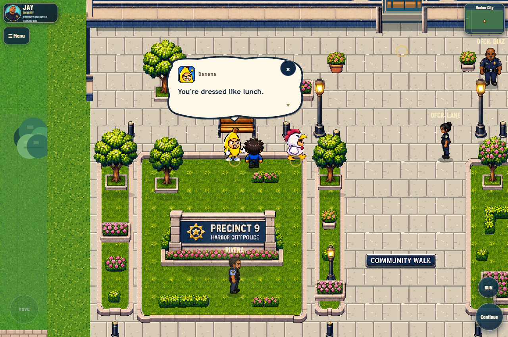
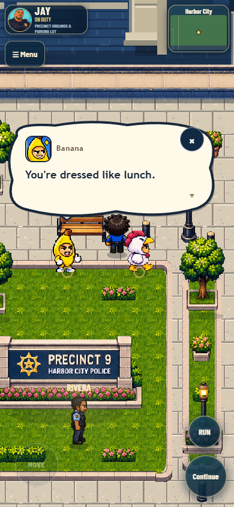
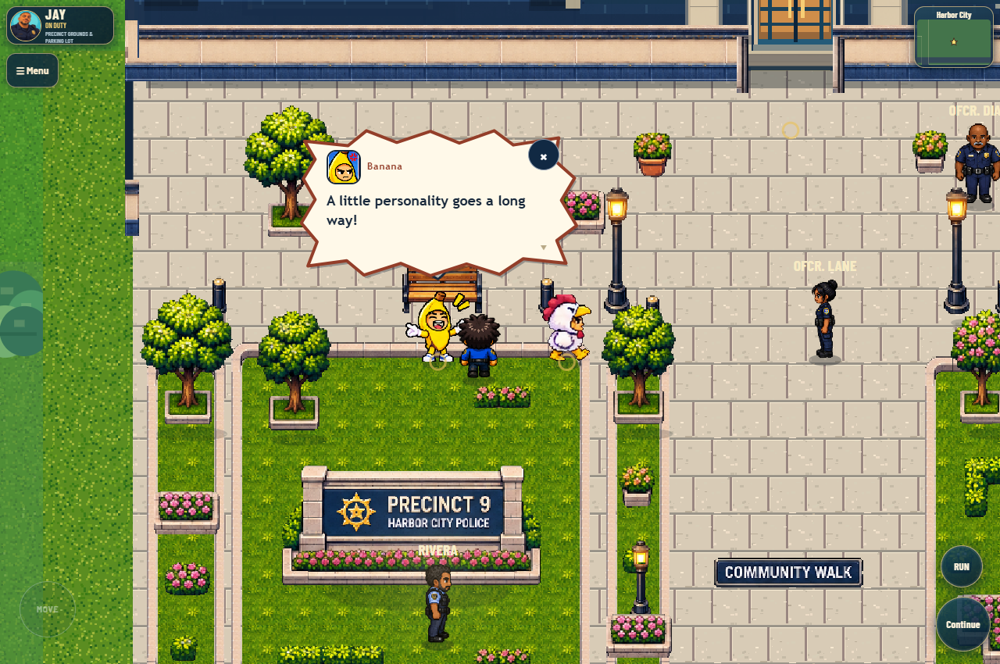
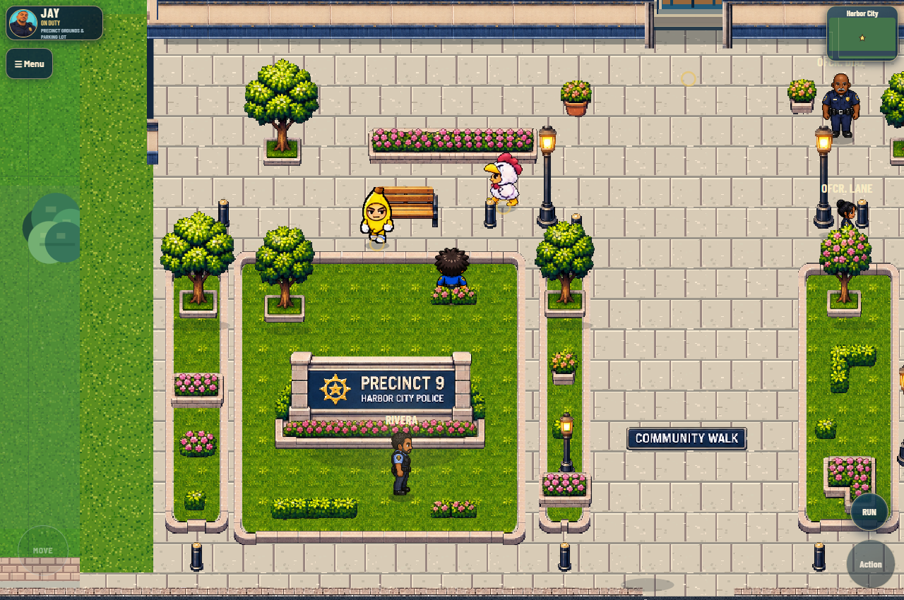
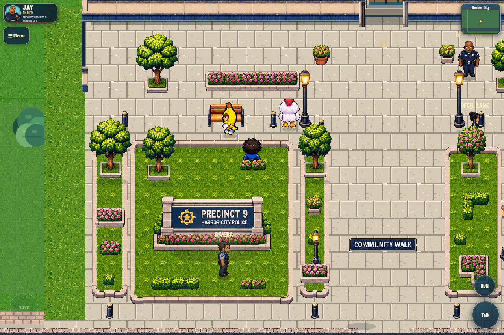
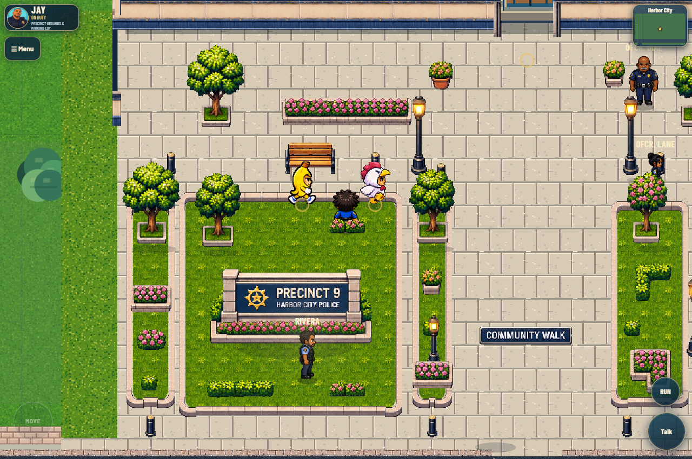
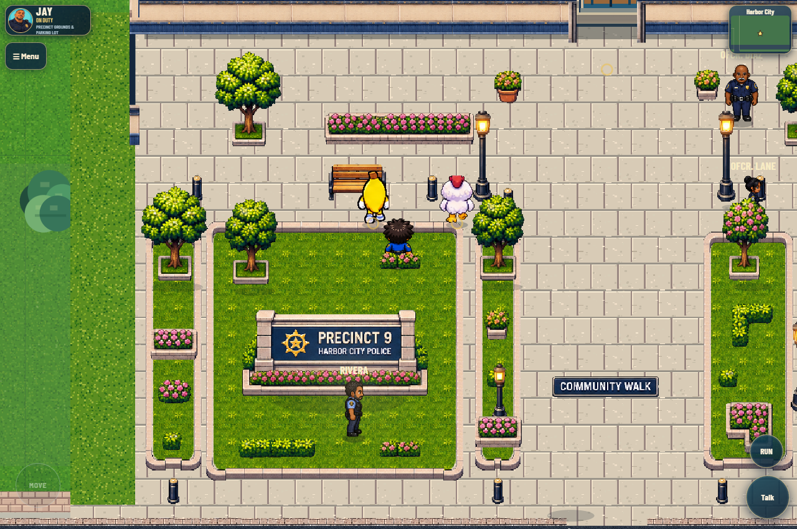

Chicken has a real Banana partner
The owner-supplied Banana NPC now walks, listens and speaks in the connected precinct preview.
Choose Chicken & Banana NPCs · Talk nearby. Talking cells 2 and 3 are cut off in the supplied PNGs, so gameplay uses only intact cells 0 and 1. The original assets remain preserved. Chicken's renderer and art are unchanged.

Actual game: approved talk frames, supplied portrait and live speaker anchor.
Mobile dialogue remains visible, readable and tap-controlled.
Supplied argument poses tested with angry metadata; existing story text is unchanged.
Down · supplied atlas row zero.
Left · no automatic mirroring.
Right · native pedestrian route and feet depth.
Up · correct back view and shared shadow convention.Local only. Zombie and existing vehicle/campaign systems are unchanged. The pack remains prototype artwork; see the report for source defects and tested coverage.